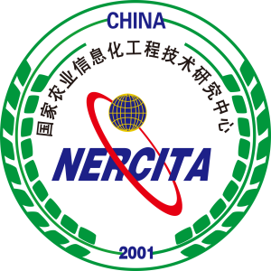
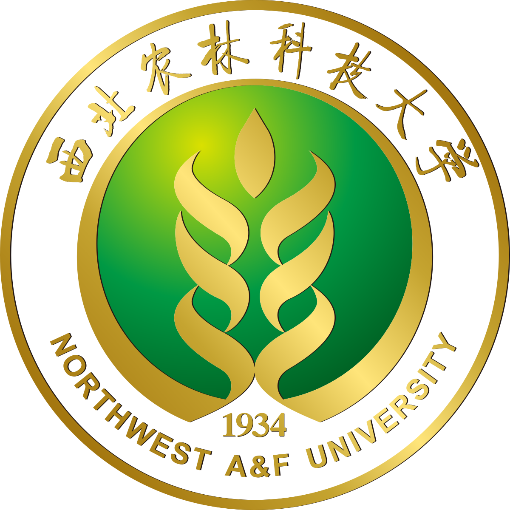

IROS Workshop OnAgricultural Robotics: Advances in Design, Perception and Control to Deal With the Complex Agricultural Environment 2025
October 20, 2025
Hangzhou, China
Room: 206
Hangzhou, China
Room: 206
| Home | Contributions | Registration | Program | Speakers | Directions |
Agricultural robotics faces unprecedented challenges in navigating and operating within complex and dynamic environments. These challenges stem from the vast variability in the appearance and shape of objects (e.g., the unique structure of individual plants) and environmental factors such as lighting conditions, occlusions, and cluttered scenes. These variations pose significant hurdles for perception, control, and plant-robot interaction, requiring innovative solutions in design, sensing, and decision-making.
This workshop aims to bring together researchers, industry professionals, and policymakers to address these challenges. The workshop will focus on three key themes:
The workshop will feature invited talks from leading experts, lightning talks by early-career researchers, and a poster session to showcase cutting-edge research. To foster active participation, the event will include break-out sessions where attendees can engage in small group discussions on specific topics, followed by a plenary sharing session to exchange insights. Additionally, a dedicated industry session will provide practical perspectives on the scalability and real-world application of agricultural robotics.
By combining formal presentations, interactive discussions, and networking opportunities, this workshop will create a dynamic and inclusive environment for sharing knowledge, fostering collaboration, and advancing the field of agricultural robotics. Please join us by submitting your paper contributions!
 Dr. Ya Xiong
Dr. Ya XiongResearch Professor National Engineering Research Center for Information Technology in Agriculture (Nercita) Personal Website yaxiong@nercita.org.cn |
 Prof. Longsheng Fu
Prof. Longsheng FuProfessor Northwest A&F University Personal Website fulsh@nwafu.edu.cn |
 Dr. Gert Kootstra
Dr. Gert KootstraAssociate Professor Wageningen University & Research Personal Website gert.kootstra@wur.nl |
 Prof. Grzegorz Cielniak
Prof. Grzegorz CielniakProfessor University of Lincoln (UK) Personal Website GCielniak@lincoln.ac.uk |
|  |  |

|

|